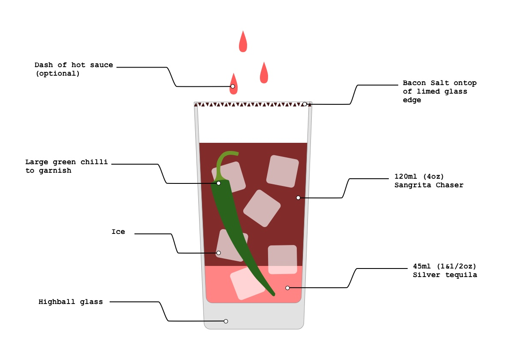
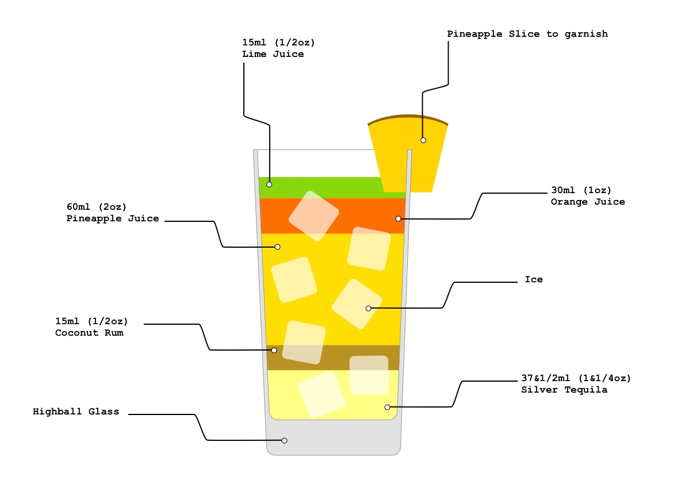
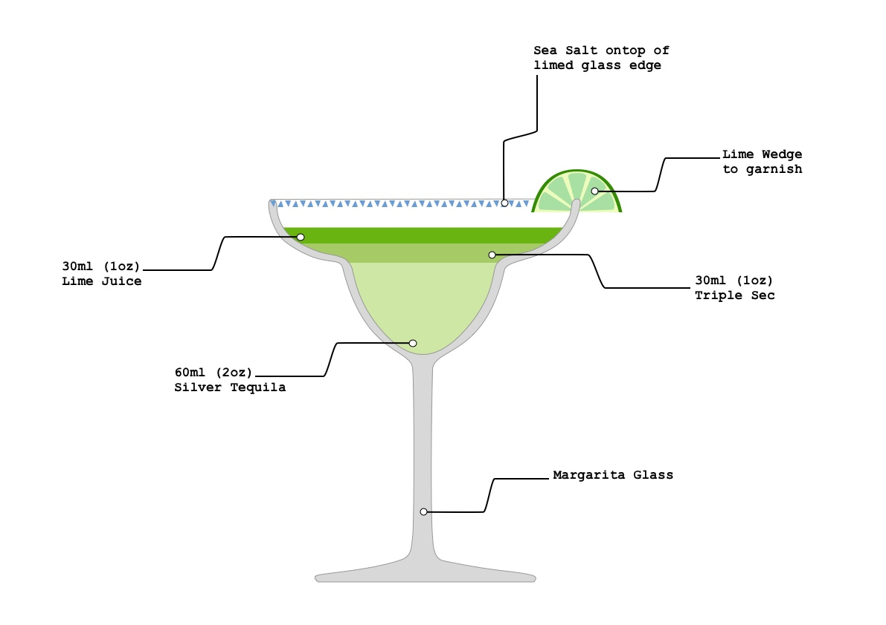
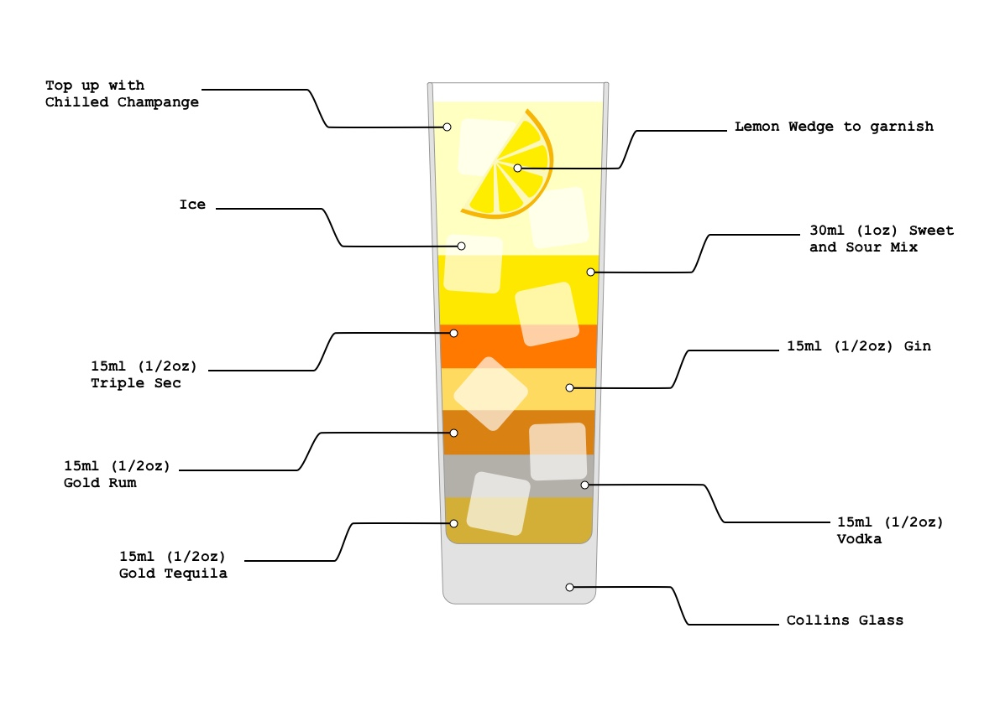
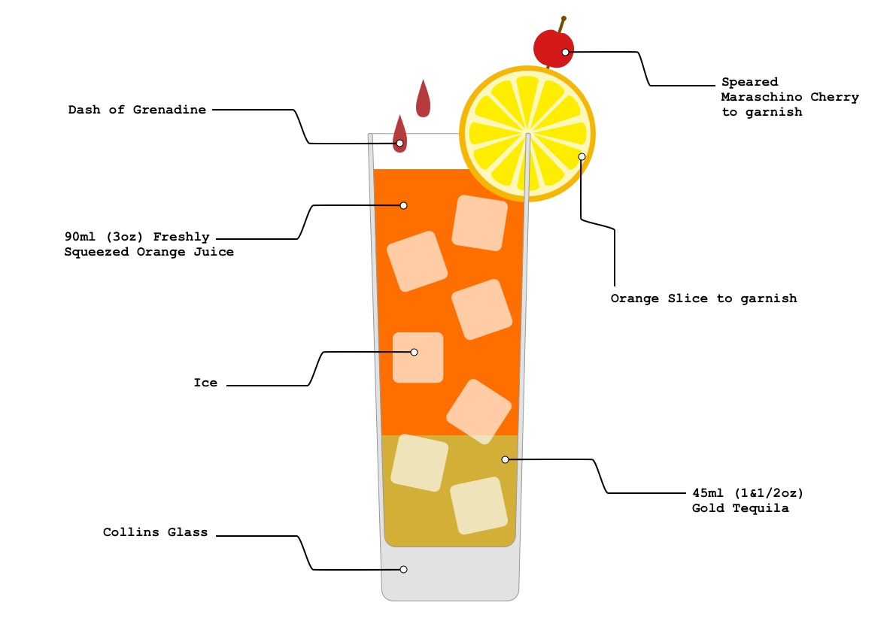

<!DOCTYPE html>
<html lang="en"></html>

<head>
    <meta charset="uft-8"/>
    <title>Tipsy Training</title>
        <!-- Linking CSS file to page -->
    <link href='css/tipsytraining-style.css' type='text/css' rel='stylesheet'>
</head>

<body>
    <article>
        <nav>
            <ul>
                <li><a href="#thestory">The Story</a></li>
                <li><a href="#bloodymaria">Cocktails</a></li>
            </ul>
        </nav>
        <header>
            <h1> Tipsy Training</h1>
        </header>
         
        <br>
        
<section>
    <h2 id= "thestory" >The Story</h2>
<p>Tispy Training was developed as a way to connect people. Have you ever been to a bar and heard of a cocktail but never knew what was in it? Have you ever wanted to recreate your favourite cocktail from a night out? 
<br>
<br>
Well Tispy Training is here to help you understand what is included in those delicious drinks. Tipsy Training is set of 5 illustrations which break up the ingredients of the cocktail in an attractive manner whilst aiding the consumer to simply create the same drink with ease.
<br>
<br>
Tispy Training Illustrations are currently available to download as wallpapers for you laptop, for free. Hopefully the future is bright for Tipsy Training as there will be many more Illustrations to come, and in many different forms.
</p>
</section>
        
<section>  
    <h2 id= "bloodymaria">Bloody Maria</h2>
    

<p>For those who like their Bloody Mary hot and spicy, this tequila-powered recipe uses Sangrita (an age-old, chilli-infused tomato juice and grenadine concoction) as its a mixer, adding a complexity of flavours and aromas - and more than a little heat.</p>
    
<p><b>Tip: </b> This is the grown-up sister of the Bloody Mary. Tequila is the perfect flavour pairing for tomatoes</p>
    
<a href="img/bloodymariawallpaper.png" download="Bloody Maria" target="_blank" class="et_pb_button" style="color: deepskyblue;">Download Bloody Maria Wallpaper</a>

</section>
 
<section>
<h2 id= "pinatequila">Pina Tequila</h2>
    

<p>The classic coconut cockatil, spiked with silver tequila and an embarrassing amount of cocktail umbrellas, plastic monkeys and curly straws. </p>

<p><b>Tip: </b> Keep it kitsch and (not very) classy. </p>
    
<a href="img/pinatequilawallpaper.png" download="Pina Tequila" target="_blank" class="et_pb_button" style="color: deepskyblue;">Download Pina Tequila Wallpaper</a> 

</section>
        
<section>
<h2 id= "pinatequila">The Perfect Margarita</h2>
    

<p>If it ain't broke... Perfectly balanced, this classic cocktail must be sipped ice cold and, once your eyes uncross, you can make another. </p>

<p><b>Tip: </b> Get messy! The lime juice and salt rim should look deliciously clumpy - just how it's supposed to be. </p>

<a href="img/theperfectmargaritawallpaper.png" download="The Perfect Margarita" target="_blank" class="et_pb_button" style="color: deepskyblue;">Download The Perfect Margarita Wallpaper</a>  

</section>
    
<section>
<h2 id= "pinatequila">Beverly Hills Iced Tea</h2>
    

<p>A luxury version of the classic Long Island Iced Tea, swapping the quaint fishing villages of the New York State coastline for the sunshine glamour of Beverly Hills. This version is powered by buttery golf tequila anf topped with champagne.</p>

<p><b>Tip: </b> Any fizz can be used, but keep it classy. </p>
    
<a href="img/beverlyhillsicedteawallpaper.png" download="Beverly Hills Iced Tea" target="_blank" class="et_pb_button" style="color: deepskyblue;">Download Beverly Hills Iced Tea Wallpaper</a>    

</section>
        
<section>
<h2 id= "pinatequila">Tequila Sunrise</h2>
    

<p>One sip of a Tequila Sunrise, with its novelty colour gradient from orange to bloof-red and cherry, is like time travelling back to the 1980's. Drink with big hair, frosted eye shadow and the soundtrack to Cocktail on repeat.</p>

<p><b>Tip: </b> Chill the glass for a frosty sunrise. </p>
    
<a href="img/tequilasunrisewallpaper.png" download="Tequila Sunrise" target="_blank" class="et_pb_button" style="color: deepskyblue;">Download Tequila Sunrise Wallpaper</a>

</section>

<section>
    <footer>
        
       <p><small>The content on this page is designed and created by Larissa Penton-Keating for a University Module. </small></p>
        
    </footer>
</section>
    </article>
</body>
